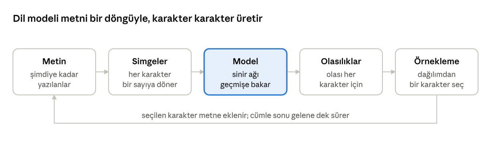

Kitaplar / Yöntem ile Sıfırdan Dil Modeli / Bölüm 1 — Dil modeli nedir?
Bölüm 1 — Dil modeli nedir?
Bir dil modeli, bir metnin devamını tahmin eden bir programdır. “damlaya damlaya göl ol” yazıldığını gören bir model, sıradaki harfin büyük olasılıkla “u” olduğunu bilir. Ama tek bir cevap vermez; her olası devama bir olasılık verir. “u” için yüksek, “a” için düşük, “ş” için neredeyse sıfır gibi.
Bu tanım basit görünür ama çok güçlüdür. Bir metnin devamını iyi tahmin edebilmek için model dilin kurallarını (hangi harfler yan yana gelir, ekler nasıl sıralanır) öğrenmek zorundadır. Yeterince büyük bir modelde buna dünya bilgisi ve akıl yürütme de eklenir. “Türkiye’nin başkenti” diye başlayan bir cümleyi iyi tamamlamak için Ankara’yı bilmek gerekir.
Metin üretmek bir döngüdür
Model yalnızca bir sonraki parçayı tahmin eder. Uzun bir metin üretmek için bu tahmini döngüyle tekrarlarız.

Her turda model, yazılanları okur ve bir olasılık dağılımı verir. Biz bu dağılımdan bir karakter çekeriz, metne ekleriz ve yeniden başlarız. ChatGPT’nin cevabı ekranda parça parça belirirken olan da tam olarak budur. Tek fark, büyük modellerin karakter yerine “simge” denen sözcük parçalarıyla çalışmasıdır (2. bölüm).
Model nasıl öğrenir?
Modeli eğitmek için etiketli veriye gerek yoktur; metnin kendisi yeter. “damlaya damlaya göl olur” cümlesi, kendi içinde onlarca soru–cevap çifti barındırır:
| Model şunu görür | Şunu tahmin etmeli |
|---|---|
| d | a |
| da | m |
| dam | l |
| … | … |
| damlaya damlaya göl olu | r |
Eğitim sırasında modelin her tahmini doğru cevapla karşılaştırılır. Hatanın ölçüsüne kayıp denir: model doğru harfe ne kadar düşük olasılık verdiyse kayıp o kadar büyüktür. Kayıp, olasılığın eksi logaritmasıdır:
Model doğru harfe 1 olasılık verirse kayıp 0 olur. 0,5 verirse kayıp 0,69, 0,01 verirse 4,6 olur. Eğitim, milyonlarca küçük adımda modelin ayarlarını (ağırlıklarını) bu kaybı azaltacak yöne kaydırmaktır.
Bu kitabın yolu
Modeli dört aşamada büyüteceğiz. Önce yalnızca bir önceki harfe bakan ve sayarak çalışan bir model kuracağız (3. bölüm). Ardından aynı modeli sinir ağıyla yapacağız (4. bölüm). Sonra birkaç önceki harfe bakan bir sinir ağı yazacağız (5. bölüm). En sonda da tüm geçmişe akıllıca bakabilen Transformer’ı kuracağız (6–8. bölümler).
Alıştırma. “öfke ile kalkan zararla oturur” atasözünden kaç eğitim örneği çıkar? (Cümlenin sonunu da tahmin edilecek bir “karakter” sayarsanız cevap, karakter sayısı + 1’dir.)